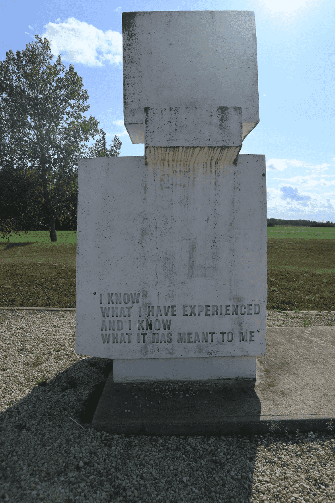
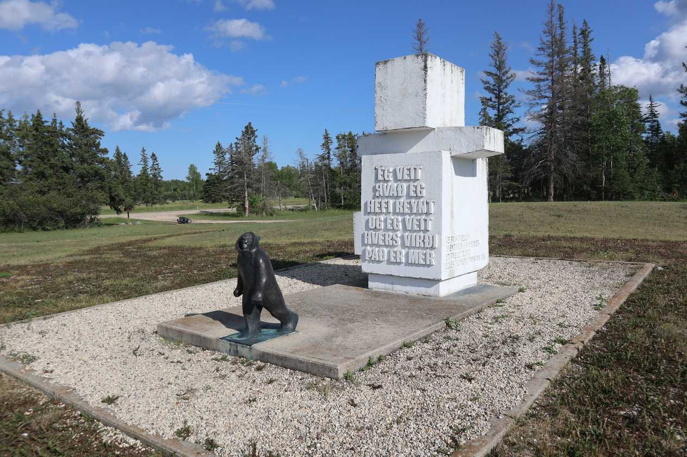
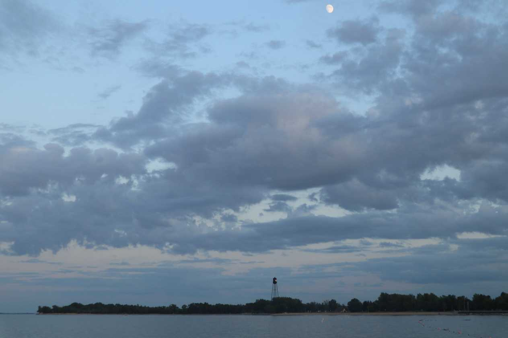

More crushing today - around 200km worth of crushing. The morning started cloudy and a little chilly. There were few cars and the houses in the region looked a little run down. I stopped for lunch near Eriksdale. The food was nice - I was surprised to find a slot machine at the gas station and people playing in there during the day...in the middle of nowhere.
The roads were almost always without a shoulder but thankfully relatively empty. At one point there were a lot of crickets on the road and I had no choice but to listen to the crunching noise for a good few minutes.
The road.

A small little Memorial park in the middle of nowhere by Arnes for Vilhjalmur Stefansson.

He was an explorer.
Nobody was operating the campsite office by the time I got there around 2000. I checked all the campsites and they were all full. I needed to sleep somewhere so I found a spot in the park off to the side by the beach. This was my first time camping not at some campsite. Sleeping can be difficult at times and I oftentimes woke up in the middle of the night to adjust my pillow. I used my yellow rain jacket as the stuffing for my pillow case which was my sleeping mat bag. It took me the entire trip to figure out that I could wrap the pillow with a sweatshirt for a better, comfier pillow. However, my sleep was always satisfying and always recovered my strength. I kept a Swiss knife and a flash light by my side when I slept although I never needed it.

Camping on the beach. My view from my private campsite. The small waves hitting the beach a meter away from my tent provided me with a wonderful deep sleep. Lake Winnipeg is beautiful.Camping on the beach. My view from my private campsite.